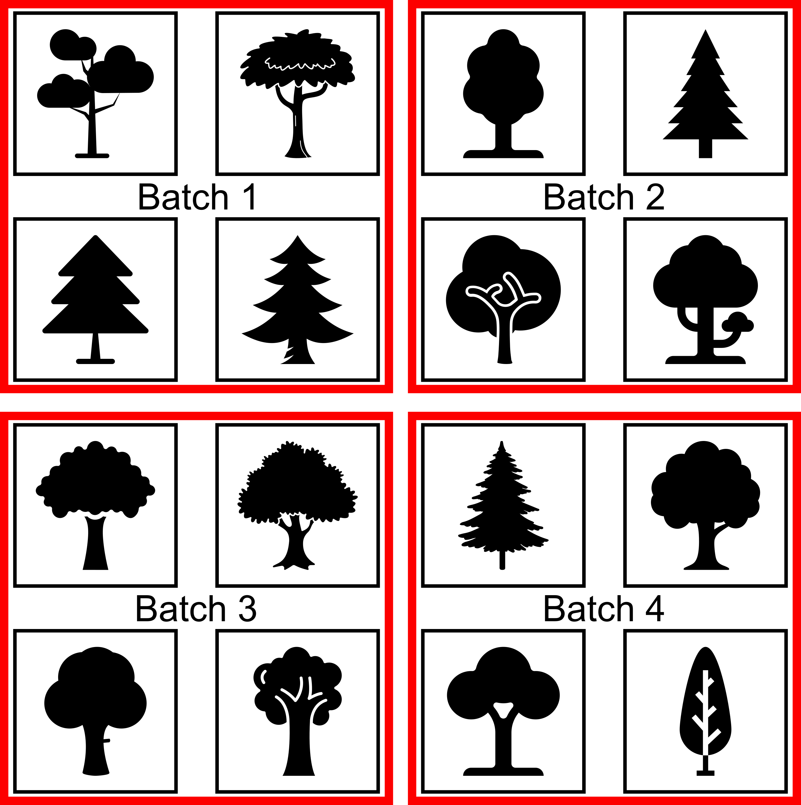
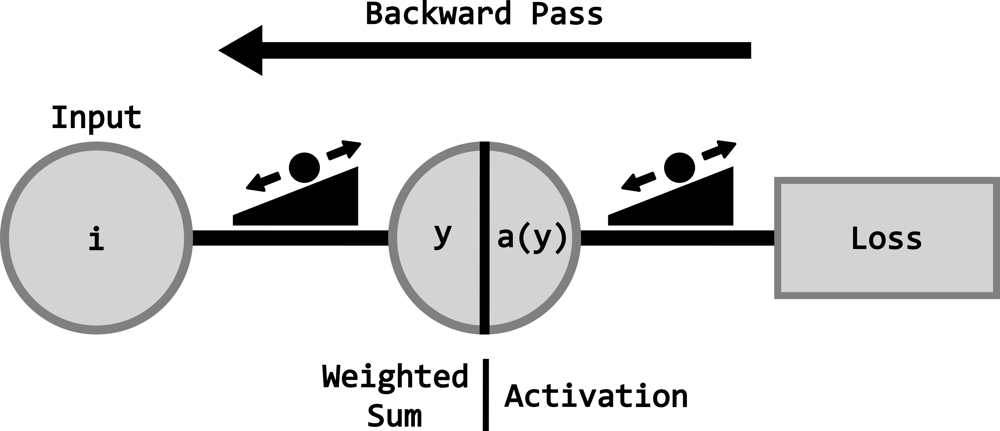

Introduction to Deep Learning
Overview
Goal: Introduce deep learning concepts for enhanced forest inventories (EFIs)
By the end of this section, you should be able to:
- Explain the role of AI in EFI modelling
- Distinguish AI, machine learning, and deep learning
- Describe the structure of a deep neural network
- Explain how models learn (loss, gradients, epochs)
- Compare image-based vs. point-based deep learning
- Use core deep learning terminology correctly
- Recognize common forestry-specific challenges
What Is Deep Learning?
Artificial Intelligence → Machine Learning → Deep Learning
- Artificial Intelligence (AI): Systems that mimic human decision-making
- Machine Learning (ML): Models that improve through data-driven experience
- Deep Learning (DL): ML using neural networks with many hidden layers

Deep Neural Networks: Key Concepts
Neural Network Components
- Layers: Input → hidden → output
- Depth: Number of layers
- Width: Number of neurons per layer

Neural Network Components
Trade-offs:
- Increases in depth/width → increase representational power
- Increases in depth/width → increase computation, overfitting risk
The Neuron
- Fundamental unit of a neural network
- Computes a weighted sum of inputs plus a bias
\[ \Large y = w_1x_1 + w_2x_2 + b \]
- Weights & biases are learned during training

Activation Functions
- Applied to neuron output
- Introduce non-linearity
- Enable learning of complex relationships
There are many types of activation functions, and you are encouraged to research which one would be best for your specific use case.
How Do Neural Networks Learn?
Prediction–Feedback Loop
The prediction-feedback loop is what makes learning possible as a deep neural network adapts to the patterns within the data and generalizes from them.

Goal: Loss, Gradients, and Epochs
Learning is driven by the loss function which guides the adjustments of the weights/biases over a number of epochs.
- Loss function: Measures prediction error
- Gradients: Sensitivity of loss to small changes in weights/bias
- Epoch: One full pass through the training data

Common Deep Learning Tasks
Learning is guided by defining what the task to be accomplished is.
- Classification
- Regression
- Segmentation
Task: Classification
Goal: Assign inputs to discrete classes
Forestry examples:
- Tree species mapping
- Land cover classification
- Disturbance detection

Task: Regression
Goal: Predict continuous values
Forestry examples:
- Above-ground biomass
- Canopy cover / LAI
- Tree height, crown size

Task: Segmentation
Goal: Assign labels to every pixel or point
Forestry examples:
- Tree crown delineation
- Stand boundaries
- Structural mapping

Data: Training, Validation, Testing
Learning happens through patterns identified in the data.
- Training: Learn parameters
- Validation: Tune hyperparameters, prevent overfitting
- Testing: Final, unbiased performance estimate
Never mix training, validation, and testing data. Mixing or reusing data between these datasets can lead to misleading performance metrics and poor generalization.
Image-Based vs. Point-Based Deep Learning
Two dominant approaches in remote sensing:
- Image-based methods
- Point-based methods
Image-Based Deep Learning
- Operates on raster imagery
- Learns spatial patterns and textures
- Common inputs: RGB, multispectral, hyperspectral

Convolutional Neural Networks (CNNs)
- Core image-based architecture
- Use sliding filters (kernels)
- Detect edges → textures → objects

Point-Based Deep Learning
- Operates directly on 3D point clouds
- No regular grid structure
- Learns from spatial relationships

Core Terminology
Establishing shared language before workflows and modeling.
Parameters vs. Hyperparameters
- Parameters: Learned values (weights, biases)
- Hyperparameters: User-defined settings
- Learning rate
- Batch size
- Epochs
- Model depth
- Learning rate
Inputs, Labels, Learned Features
- Input features: What the model sees
- Labels: What the model predicts
- Learned features: Internal representations
- Logits: Outputs of the final layer of a model
Data Augmentation
- Artificially increases training diversity
- Improves robustness and generalization
- Especially useful with limited labels

Batches and Batch Size
- Data processed in small subsets (batches)
- Batch size: Samples per training step

Architecture vs. Weights
- Architecture: Model/network structure (fixed)
- Number and type of layers
- How neurons/layers connect
- Weights: Learned numerical values (changes)
- Updated during training
- Learned based on data
Training Loop
Repeated cycle until optimal point reached:
- Forward pass (predict)
- Loss computation (assess)
- Backward pass (feedback)
- Parameter update (adjust)

Transfer Learning and Fine-Tuning
- Transfer learning: Start from pretrained model
- Fine-tuning: Adapt weights to your domain
Common in forestry due to limited labeled data.
Deep Learning in Forestry: Challenges
Forestry data introduce domain-specific constraints.
Key Challenges and Considerations
| Challenge | Impact | Common Solutions |
|---|---|---|
| Sensor & site variability | Poor generalization | Fine-tuning, domain adaptation |
| Spatial autocorrelation | Inflated accuracy | Spatial CV, sampling strategies |
| Class imbalance | Bias toward majority classes | Class weighting, loss design |
| Synthetic benchmarks | Limited real-world transfer | Domain adaptation |
| Limited labels | Reduced robustness | Augmentation, transfer learning |
Human expertise is essential in AI-derived forest inventories because models do not define objectives, meaning, or validity on their own. Forestry knowledge is required to select appropriate data, define training and modelling approaches, and interpret outputs/results ensuring they are scientifically sound, enabling deep learning to serve as a powerful tool for informed forest management decision-making.